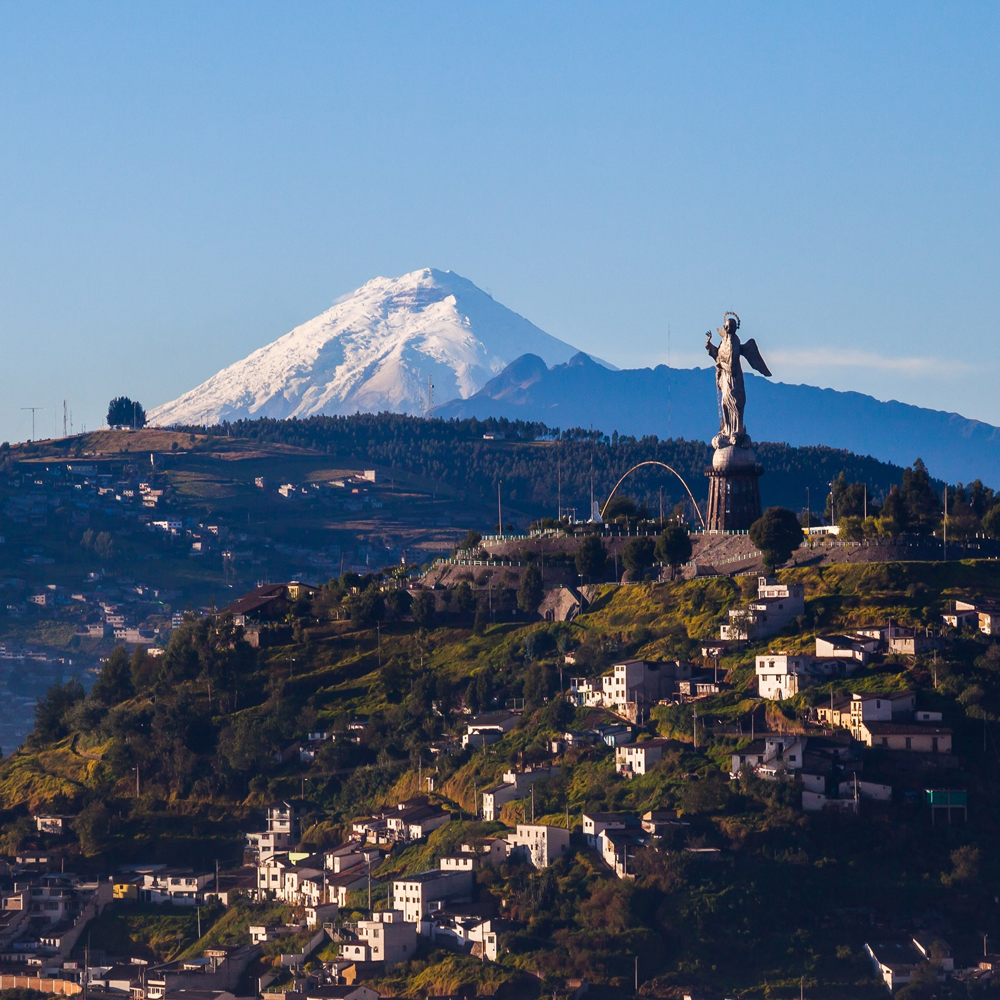
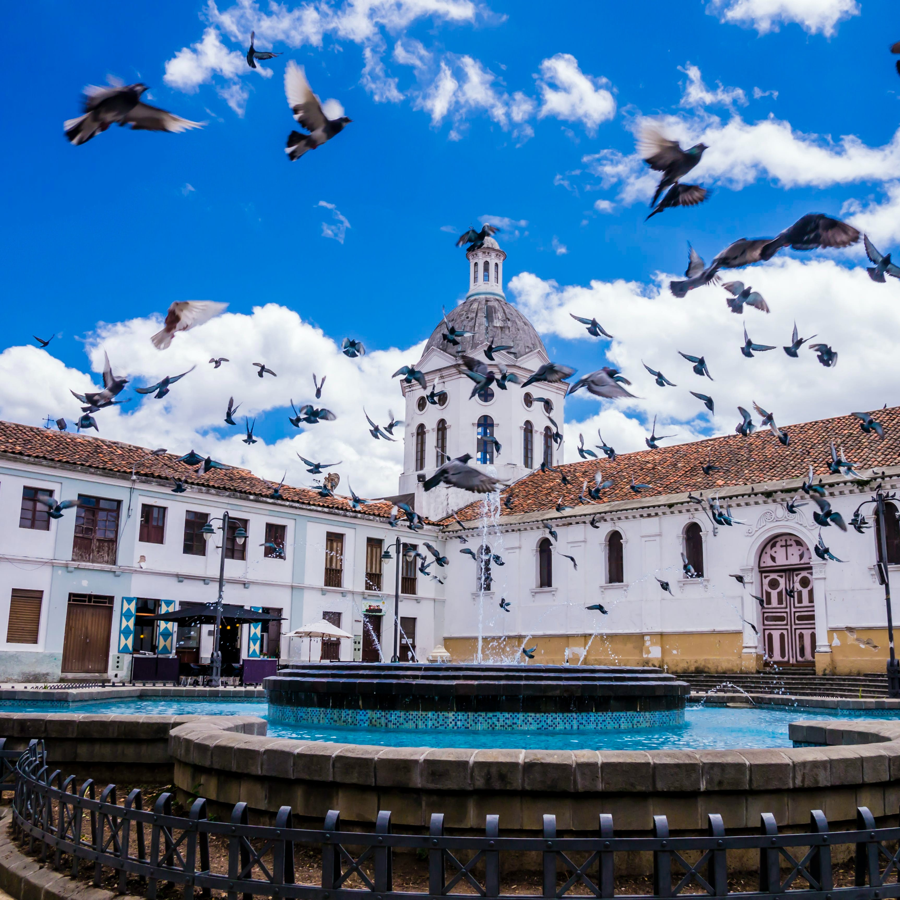

Ecuador
From the Amazon Rainforest to Galápagos Wonders
My Ecuadorian odyssey began in the lively capital city of Quito, perched high in the Andes. Exploring Quito's well-preserved colonial center, a UNESCO World Heritage site, I marveled at the architecture, including the iconic Basilica del Voto Nacional. A stroll through the bustling streets and interactions with friendly locals provided a warm welcome to this vibrant nation.
 My adventure led me to the Amazon Rainforest, a world of unparalleled biodiversity. Cruising along the Napo River, I ventured deep into the jungle, where the sounds of exotic birds and the rustling of the foliage enveloped me. Guided hikes allowed me to encounter fascinating wildlife, including colorful macaws, elusive jaguars, and playful river otters. A visit to an indigenous village provided insight into the rich traditions and sustainable practices of the local communities.
No exploration of Ecuador would be complete without a visit to the Galápagos Islands. Snorkeling among schools of vibrant fish, sea turtles, and playful sea lions in crystal-clear waters was a surreal experience. I explored the unique ecosystems of each island, observing giant tortoises, marine iguanas, and blue-footed boobies. The Galápagos showcased the delicate balance of nature and the need for conservation efforts to protect these iconic species.
Baños, often dubbed the "Adventure Capital of Ecuador," beckoned with thrilling activities. I embarked on a heart-pounding canyoning adventure, rappelling down dramatic waterfalls amid lush canyons. Exploring the famous "Swing at the End of the World" offered exhilarating views of the Tungurahua volcano. Soaking in the rejuvenating thermal baths provided a relaxing contrast to the adrenaline-pumping adventures.
 Traveling to Cuenca, I discovered the colonial elegance of this charming city. Strolling along cobblestone streets, I admired the well-preserved architecture, including the Cathedral of the Immaculate Conception. The vibrant art scene in Cuenca was a highlight, with galleries showcasing contemporary and traditional Ecuadorian art. Sampling local delicacies in bustling markets allowed me to savor the flavors of the Andes.
Otavalo, home to the world's most famous indigenous market, beckoned with a riot of colors and textures. Exploring the market stalls, I marveled at the exquisite handwoven textiles, intricate jewelry, and vibrant paintings created by local artisans. Engaging with the Otavaleños offered a glimpse into their proud traditions and craftsmanship.
My journey concluded in Guayaquil, Ecuador's largest city and main port. I explored the Malecón 2000, a vibrant riverfront promenade, and admired the impressive architecture of the Palacio de Cristal. Savoring fresh seafood at the Mercado Sur allowed me to indulge in the coastal flavors of Ecuador. The city's dynamic atmosphere and cultural diversity provided a fitting end to my Ecuadorian adventure.
As I reflect on my journey across Ecuador, I am humbled by the country's astonishing diversity and natural wonders, from the Amazon Rainforest to the Galápagos Islands, Baños' adventure thrills to the colonial elegance of Cuenca, and the indigenous traditions of Otavalo to the coastal charms of Guayaquil. Ecuador's vibrant culture, warm hospitality, and commitment to preserving its unique ecosystems have left an indelible mark on my soul.
Join me in future travels as I continue to explore the captivating regions of the Americas, each offering its own unique blend of beauty and cultural richness. Until next time, keep your spirit of adventure alive, and may your travels lead you to the wonders of the world. ¡Hasta luego, amigos!